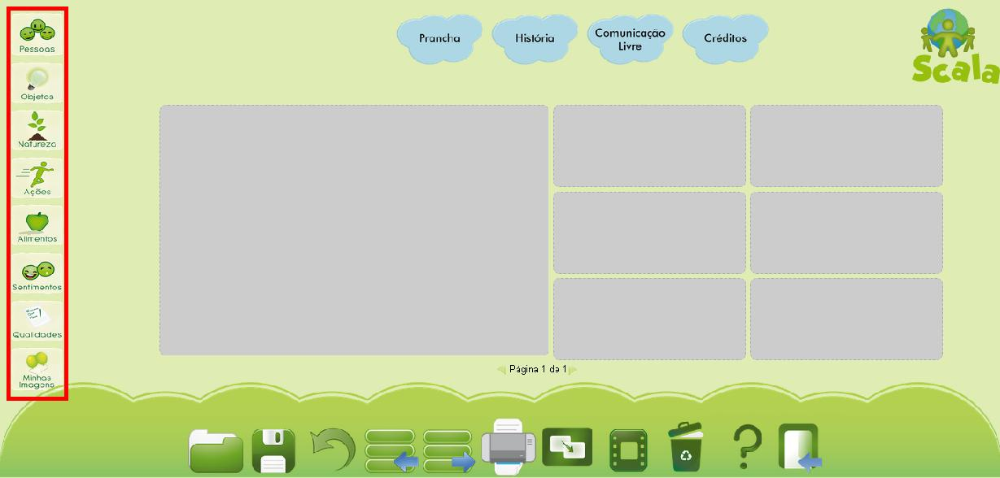

Módulo Prancha
- 1 Modificando o Layout da Prancha
- 2 Criando uma Prancha
- 2.1 Visualizar e reproduzir a prancha criada
- 2.2 Desfazer uma operação
- 3 Editar uma figura
- 4 Salvar a prancha
- 5 Abrir a prancha
- 6 Adicionar páginas a uma prancha e limpar a prancha
- 7 Exportar prancha
- 8 Importar figuras
- 9 Imprimir prancha
1 Modificando o Layout da Prancha
Os layouts são as diversas opções que se tem de organizar a prancha e as figuras que nela estão. Alguns layouts possuem maior quantidade de lugares para figuras e outros menor. Para modificar o layout da prancha basta clicar sobre a opção "Layout" que se encontra no menu inferior.
Menu inferior: opção LayoutAo clicar sobre esta opção, abrirá a caixa de diálogo "Escolha a forma do seu Layout" com quatro opções. Para escolher um dos layouts basta clicar sobre ele. E para cancelar basta clicar sobre a opção voltar
 Caixa de diálogo Escolha um Layout
Caixa de diálogo Escolha um LayoutApós escolher o layout aparecerá uma mensagem de confirmação, avisando que com a troca de layout as figuras da prancha serão perdidas, isto se não foram salvas anteriormente. Para confirmar a troca de layout basta clicar sobre a opção Ok. Caso contrário, basta clicar sobre a opção Cancelar e salvar a prancha antes de realizar a troca de layout.
 Confirmar mudança de Layout
Confirmar mudança de Layout2 Criando uma Prancha
Para criar uma prancha, inicialmente se escolhe um layout do modo indicado anteriormente, e após pode-se adicionar figuras a ela. Para adicionar figuras basta escolher uma das opções de categorias listadas no lado esquerdo e clicar sobre a figura desejada. As opções de categorias são: Pessoas, Objeto, Natureza, Ações, Alimentos, Sentimentos, Qualidades e M. Imagens.
Em cada categoria há figuras relacionas com a nomenclatura, por exemplo, em "Pessoas" têm figuras de familiares, profissões, nacionalidades, entre outros, e em "Objetos" têm figuras de, por exemplo, bola, caixa, DVD, etc. A categoria "M. Imagens" representa Minhas Imagens e tem as figuras que foram importadas pelo usuário para o aplicativo Scala.
CategoriasPara inserir uma figura na prancha basta clicar sobre ela e depois sobre o lugar em que ela ficará, assim pode-se inserir diversas figuras. Por exemplo, na imagem a seguir temos a figura de um menino que está comendo. Como comer é uma ação, inicialmente vamos em "Ações" e procuramos a figura da ação Comer. Em seguida, clicamos primeiramente sobre a ação comer e depois sobre o espaço onde se deseja colocá-la.
 Inserir primeira figura
Inserir primeira figura
A mesma figura pode ser adicionada diversas vezes, e quando se deseja trocar um figura de lugar basta clicar sobre ela e após sobre o lugar de destino. Se no lugar de destino já houver uma figura, ela então será retirada e a outra colocada automaticamente.
Logo após, podem ser adicionadas outras figuras. Por exemplo, na imagem a seguir foram adicionadas diversas figuras da categoria "Alimentos", para isso basta seguir o mesmo processo, primeiro se clica na categoria "Alimentos" e depois se escolhe a figura, clicando primeiramente na figura e depois no lugar de destino.
 Inserir mais figuras
Inserir mais figuras
2.1 Visualizar e reproduzir a prancha criada
Durante a criação de uma prancha, a qualquer momento, pode-se utilizar a opção "Visualizar" para ver como está ficando a prancha e também para reproduzi-la.
 Menu inferior: opção Reproduzir
Menu inferior: opção ReproduzirApós clicar na opção Visualizar a caixa de diálogo "Visualização da Prancha" é aberta, na qual se tem a opção de reproduzir a prancha. Na opção Reproduzir as figuras são lidas, de forma sequencial e oral, pelo aplicativo Scala, podendo formar frases como "Comer Abacaxi, Algodão Doce, Ameixa, Bolachas, Banana, Bolo". Para voltar no modo de edição da prancha basta clicar na opção Fechar.
2.2 Desfazer uma operação
Para desfazer uma operação executada na prancha utiliza-se a opção "Desfazer" que se encontra no menu inferior. Pode-se desfazer até dez operações, após este número a prancha continua como está.
 Menu inferior: opção Desfazer
Menu inferior: opção Desfazer3 Editar uma figura
Cada figura adicionada em uma prancha pode receber diversas modificações, para isso basta clicar sobre ela e aparecerá um menu no canto inferior direito. A figura selecionada ficará com o fundo branco, como na imagem a seguir.
 Menu de edição de figura
Menu de edição de figura
A primeira opção do menu é a edição da legenda da figura, para modificá-lo pode ser utilizada a opção "Editar", simbolizada pelo lápis. Ao clicar sobre a opção Editar abre-se a caixa de diálogo "Digite uma legenda" na qual se encontra um espaço para escrever um novo nome para a figura.
Após escrever o novo nome basta clicar em Alterar para salvar, ou para cancelar clicar em Fechar.
 Caixa de diálogo Digite uma legenda
Caixa de diálogo Digite uma legendaNa opção "Remover", simbolizada pelo X vermelho, a figura é removida da prancha. Para utilizar esta opção basta clicar sobre o ícone, em seguida abrirá uma mensagem de confirmação, para continuar e remover a figura basta clicar Ok e para cancelar basta clicar em Cancelar.
 Caixa de Diálogo Confirmar exclusão de figura
Caixa de Diálogo Confirmar exclusão de figuraSe o usuário desejar modificar a reprodução, alterando a voz ou a palavra pronunciada, pode realizar a gravação em um gravador e em seguida clicar sobre a opção "Gravar", simbolizada pelo círculo laranja. Ao clicar em gravar abrirá a caixa de diálogo "Alterar audio, upload de som (.mp3)", na qual o usuário ter a opção de procurar um arquivo de som no formato .mp3, gravado anteriormente, e clicar em Enviar para atualizar o som, ou clicar em Fechar para cancelar.
") Caixa de Diálogo Alterar audio, upload de som(.mp3)
Caixa de Diálogo Alterar audio, upload de som(.mp3)Na opção "Reproduzir", simbolizada pelo auto falante, o nome da figura é reproduzido de forma oral pelo aplicativo Scala.
As alterações realizadas em uma figura ficam salvas apenas nesta prancha, e não no aplicativo, ou seja, qualquer outra prancha permanecerá com as características padrão da figura.
É importante que após a edição de uma figura, ou de qualquer ação que necessite selecionar a figura, clicar na figura novamente para tirar a seleção. Caso não seja realizado este procedimento, quando clicado sobre outro lugar na prancha a figura mudará de lugar.
4 Salvar a prancha
Durante a criação de uma prancha, a qualquer momento, pode-se utilizar a opção Salvar para salvar a prancha. Esta opção se encontra no menu inferior como indicado na imagem a seguir.
 Menu inferior: opção salvar
Menu inferior: opção salvar
Ao clicar sobre a opção "Salvar" será aberta a caixa de diálogo "Escolha o modo que você deseja salvar a sua prancha", tendo como opções Salvar no computador, em Pranchar Públicas ou em Pranchas Privadas.
 Caixa de Diálogo "Escolha o modo que você deseja salvar a sua prancha"
Caixa de Diálogo "Escolha o modo que você deseja salvar a sua prancha"Ao escolher Salvar no computador prancha é salva automaticamente na sua pasta de downloads com o nome do usuário cadastrado. Por exemplo, se o nome do usuário é Gustavo, o nome do arquivo salvo será Gustavo.psw. Se já houver uma prancha com o mesmo nome um segundo arquivo será criado com o nome Gustavo(1).psw.
Dependendo das configurações do seu navegador, o arquivo não será salvo automaticamente, mas será aberta uma caixa de diálogo para escolher o local em que se deseja salvar a prancha, como mostra a imagem a seguir. Assim, é só escolher uma pasta do seu computador e, se desejar, modificar o nome da prancha salva.
 Caixa de diálogo Salvar Como
Caixa de diálogo Salvar Como Nas outras duas opções basta escrever um nome a prancha e salvá-la. Nas Pranchas Privadas o conteúdo fica disponível apenas ao usuário que o criou, nas Pranchas Públicas fica disponível a todos os usuários do Scalaweb. Após escolher a opção a prancha será salva e a mensagem "Prancha Salva" será exibida.
5 Abrir a prancha
Quando o aplicativo Scala for iniciado novamente, as pranchas salvas podem ser abertas utilizando a opção "Abrir", que se encontra no menu inferior.
Menu inferior: opção AbrirAo clicar sobre a opção "Abrir", abre a caixa de diálogo "Escolha a prancha que deseja abrir" que contém as opções de abrir no computador e duas listas de pranchas, uma com as Pranchas Privadas e outra com as Pranchas Públicas. Para selecionar um arquivo do computador basta clicar sobre "Escolher arquivo", selecionar a prancha em uma caixa de diálogo semelhante a caixa "Salvar Como" e clicar na opção "Abrir", lembre-se que deve estar no mesmo formato salvo .psw.
Para abrir um das pranchas das listas, basta clicar sobre ela, e em seguida sobre a opção "Abrir". Se uma determinada prancha não estiver na lista, basta colocar seu nome no campo disponível e a prancha será buscada.

Caso seja escolhido um arquivo que o aplicativo Scala não reconhece sua extensão, ou seja, é diferente de .psw, a mensagem a seguir será exibida.

6 Adicionar páginas a uma prancha e limpar a prancha
Para limpar totalmente a prancha, apagando todas as figuras que nela se encontram, basta clicar na opção "Limpar", que se encontra no menu inferior. Nesta opção o usuário pode apagar todas as figuras e criar uma nova prancha.
Menu inferior: opção LimparApós clicar sobre a opção Limpar abre uma mensagem de confirmação, para continuar basta clicar sobre Ok e para não limpar mais a prancha clicar em Cancelar.

Porém, se o objetivo é apenas ter mais espaço para adicionar figura e não iniciar uma nova prancha, basta clicar nas setas verdes nas laterais e uma continuação da prancha será adicionada, pronta para ser usada. Assim, tem-se a opção de adicionar espaços na prancha, em vez de limpá-la completamente. Assim, se uma prancha possui mais de uma página, para alternar entre elas utilizam-se as flechas que se encontram em baixo da prancha, ao lado da palavra Página, e esta palavra indica o número total de páginas de uma prancha e a página atual.
 Alternando entre páginas
Alternando entre páginas7 Exportar
A opção Exportar, que se encontra no menu inferior, é utilizada quando se deseja salvar a prancha com a extensão .pdf, tendo assim a possibilidade de abri-la em outros aplicativos.
 Menu inferior: opção Exportar
Menu inferior: opção Exportar
Após selecionar a opção Exportar a prancha será salva automaticamente na pasta downloads do seu computador no formato .pdf. Novamente, dependendo das configurações do seu navegador será aberta uma caixa de diálogo Salvar Como, na qual se procura um local específico para exportar a prancha. O nome padrão do arquivo exportado é Prancha_NomeUsuário(data), ou por exemplo Prancha_Gustavo(09-06-11).
8 Importar figuras
Para importar uma figura utiliza-se a opção "Importar" que se encontra no menu inferior. Esta opção possibilita que uma figura seja importada para o aplicativo Scala.
Menu inferior: opção ImportarAo clicar sobre a opção "Importar" será aberta a caixa de diálogo "Importar Imagem" na qual se escolhe uma imagem, clicando em "Escolher Arquivo", e se escreve o nome da imagem. O aplicativo Scala recohece imagens no formato .jpg, .png e .gif, ficando a imagem importada disponível na categoria M. Imagens, ou minhas imagens. O nome escolhido para a imagem é o que será lido pelo aplicativo Scala na opção Reproduzir, ele poderá ser alterado na opção Editar.
Após importar a figura aparecerá a mensagem a seguir e a figura já estará disponível para a criação de pranchas.
9 Imprimir a prancha
Para imprimir uma prancha utiliza-se a opção "Imprimir" que se encontra no menu inferior.
 Menu inferior: opção Importar
Menu inferior: opção Importar
Ao clicar sobre a opção Imprimir, será aberta uma janela com as configurações da impressora configurada e uma visualização prévia na impressão. Para imprimir basta clicar em imprimir e para cancelar basta clicar em Cancelar. Todas as páginas de uma prancha serão impressas, caso haja mais de uma.
Visualização Impressão